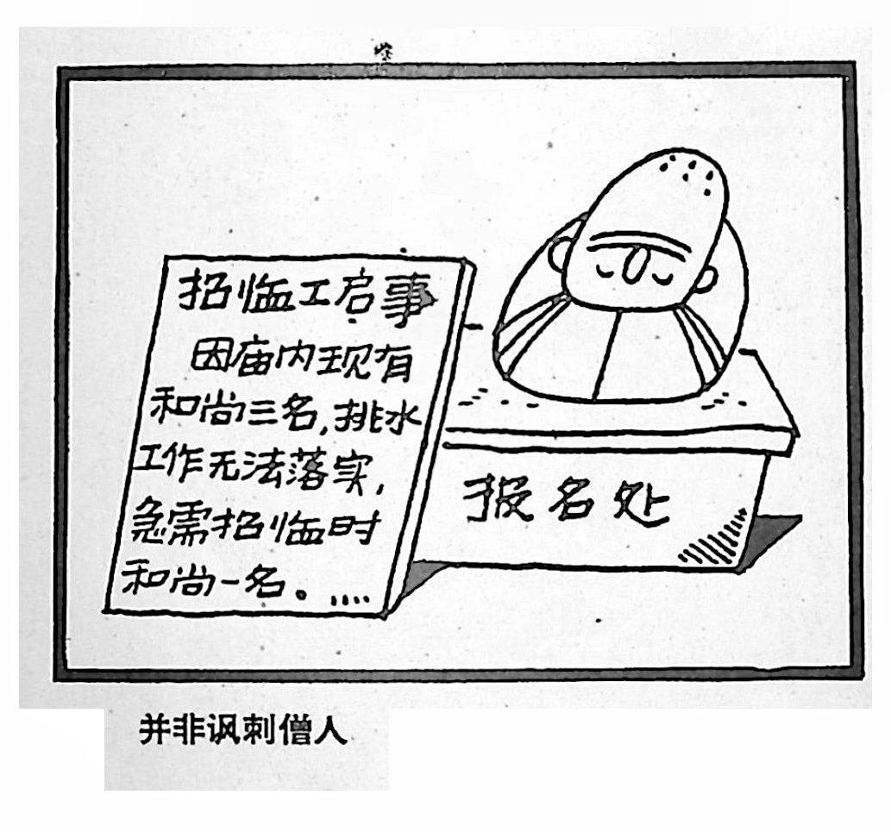

王燕 《人事》1990年第8期（总第59期），封三
并非讽刺僧人
Not a Satire on Monks
- Text in the drawing
- 招临工启事 因庙内现有和尚三名，排水工作无法落实，急需招临时和尚一名…… / 报名处
Recruiting a temporary worker: since the temple currently has three monks and the water-carrying cannot be done, one temporary monk is urgently needed… / Registration - Description
- Beside a registration desk staffed by a monk, a notice advertises for a temporary monk: the temple already has three, so nobody carries the water.
- Note
- The proverb: one monk carries his own water, two carry it together, three have none to drink. Overstaffed units hired temporary workers (临时工) to do the actual work.
- Artist
- Wang Yan 王燕
- Published in
- 《人事》1990年第8期（总第59期）, inside back cover
- Themes
- Overstaffing and overlapping agencies · Passing the buck

Cite
Wang Yan, “并非讽刺僧人” [Not a Satire on Monks], Renshi (Personnel) 《人事》, 1990, no. 8, inside back cover.